.jpg)
Du lịch đảo Hòn Bà: Con đường bí ẩn dưới nước dẫn tới miếu Hòn Bà
Vũng Tàu nổi tiếng là địa điểm du lịch của người thành phố Hồ Chí Minh vào những kỳ nghỉ. Bên cạnh sự ồn ào, náo nhiệt của thành phố biển, Vũng Tàu còn ẩn chứa sự hoang sơ, bình dị tại Hòn Bà – một điểm đến Vũng Tàu đã và đang được nhiều người tìm đến để thư giãn tinh thần.
Địa chỉ: thuộc thị xã Lagi, Bình Thuận, Hòn Bà còn có tên là hòn Ba Viên Đạn hay hòn Archinard, nằm cách chân núi Nhỏ khoảng 200m.
-
Đường đến đảo Hòn Bà
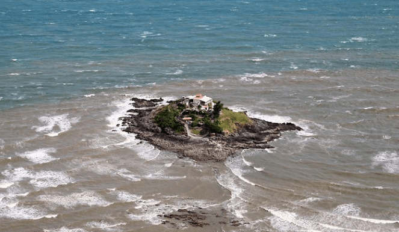Đảo Hòn Bà nhìn từ trên cao
Đường đi: Để đến với địa điểm du lịch Vũng Tàu này, từ quốc lộ 1A rẽ vào chân núi, bạn phải đi qua con đường dài 30km ngoằn ngoèo với những con dốc ngày càng được nâng dần lên cao. Dọc hai bên đường, phong cảnh hoang sơ và rất đỗi yên bình, chỉ có tiếng gió, tiếng chim rừng, phảng phất trong không gian lắng đọng.
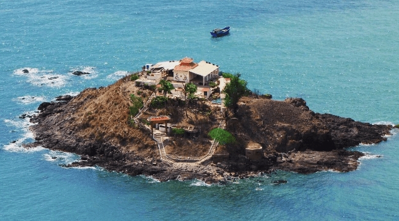Vẻ đẹp hoang sơ và thơ mộng của đảo Hòn Bà
Càng lên cao, khí hậu càng mát mẻ và bạn sẽ thấy những tảng đá to nhỏ đủ hình dạng, kích cỡ, chen chúc nhau nằm trên bờ, rải rác giữa dòng là suối Đá Giăng. Dòng nước trắng xóa chảy róc rách như bản tình ca giữa núi rừng yên ả. Nơi này có một tấm biển hướng dẫn đến với ngôi nhà của bác sĩ Yersin.
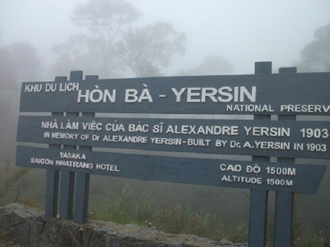Bảng hướng dẫn đường lên nhà bác sĩ Yersin (Ảnh sưu tầm)
-
Câu chuyện về đảo Hòn Bà có thể bạn chưa biết
Theo tài liệu, vào năm 1915, bác sĩ Yersin đã phát hiển ra đảo Hòn Bà là nơi có khí hậu mát mẻ, rất giống với Đà Lạt, thích hợp cho việc trồng cây Canhkina được dùng làm nguyên liệu chế ra thuốc Ký Ninh trị bệnh sốt rét. Từ đó, bác sỹ xây một ngôi nhà trên đó để tiện việc chăm sóc cây. Đó là một ngôi nhà bằng gỗ, hiện nay đã xuống cấp nhưng được địa phương tái tạo lại để khách đi du lịch Vũng Tàu có dịp đến tham quan tại địa điểm du lịch Vũng Tàu.
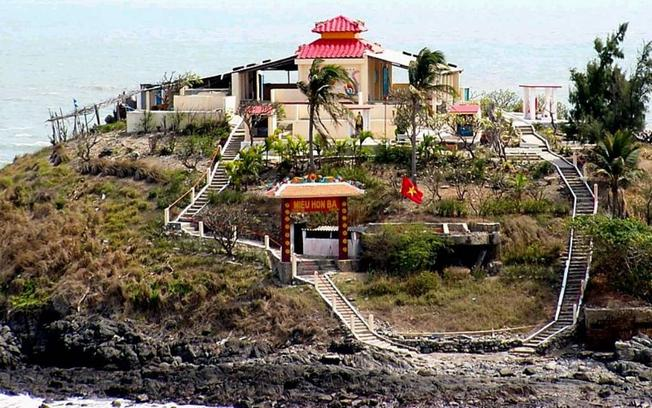Miếu Bà cao 4m so với mặt nươc biển (Ảnh sưu tầm)
Vào thời điểm khi thủy triều rút, trên đảo sẽ lộ ra một con đường bằng đá, du khách nếu ưa thích mạo hiểm có thể tham quan và khám phá. Trên đảo có Miếu Bà được xây dựng vào năm 1881, là một nơi khá linh thiêng. Ngôi miếu này khá nhỏ, nổi trên mặt đất 4m và là nơi thờ các thần linh. Điểm đến Vũng Tàu này còn là lưu lại những di tích lịch sử chiến tranh một thời với một tầng hầm dài 6m, rộng 3m; trước kia từng là nơi họp bí mật của cách mạng.
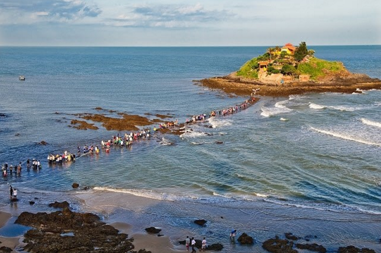Con đường bí ẩn dưới nước dẫn tới miếu Hòn Bà
-
Con đường trên biển thú vị
Để đến được Hòn Bà – địa điểm du lịch Vũng Tàu, du khách có thể đi bằng một trong hai cách thông thường là đi thuyền, ghe khi nước lớn hoặc đi bộ khi nước ròng. Đa số khách đi du lịch Vũng Tàu thường chọn cách 2 vì được trải nghiệm thú vị. Bạn phải vượt qua một bãi đầy những con hàu dài, rộng, gập ghềnh, nhưng phải cẩn thận để tránh bị sảy chân bởi những vỏ hàu sắc bén có thể làm bạn trầy xước.
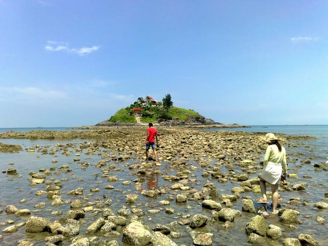Đi bộ khi nước ròng lên Miếu Bà (Ảnh sưu tầm)
Đường đi bộ trên biển
-
Miếu Hòn Bà
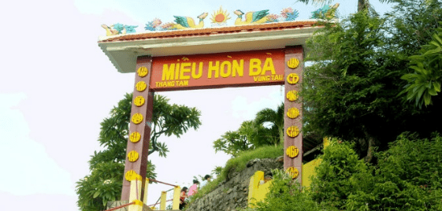Đặt chân đến đảo, bắt gặp Miếu Hòn Bà
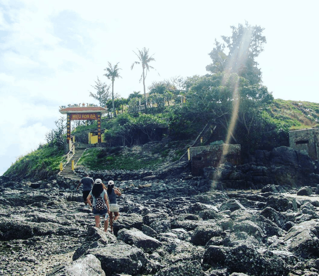Tham quan miếu Hòn Bà
Theo thông lệ mỗi năm, miếu Hòn Bà tổ chức cúng 4 kỳ, dựa theo con nước, gồm: Tháng Giêng, tháng 4, tháng 7 và tháng 10 (Âm lịch). Riêng trong tháng Giêng, đặc biệt là vào ngày rằm, các tour du lịch Vũng Tàu thường đưa du khách đến đây để chiêm bái, cầu nguyện cho một năm mới an lành và hạnh phúc. Đây là thời điểm Miếu Bà đông đúc và náo nhiệt hơn hẳn.
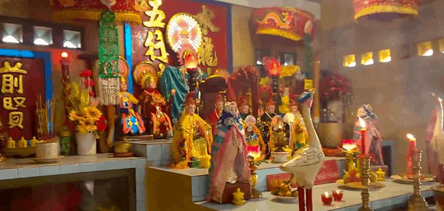Bên trong miếu Hòn Bà
-
Đừng bỏ lỡ những khoảnh khắc trong ngày tại đảo Hòn Bà
Đào Hòn Bà là sự kết hợp hoàn hảo giữa đá và biển, được bao phủ bởi màu xanh của cây dừa, cây dương, cau và hoa sứ. Nước biển trong vắt, mát lạnh, phản chiếu xa xa là những phiến đá đủ kích cỡ với hình dáng lạ mắt. Hòn Bà đẹp nhất vào những lúc bình minh và hoàng hôn, những tia nắng nhẹ tạo nên vẻ đẹp rực rỡ lung linh mờ ảo.
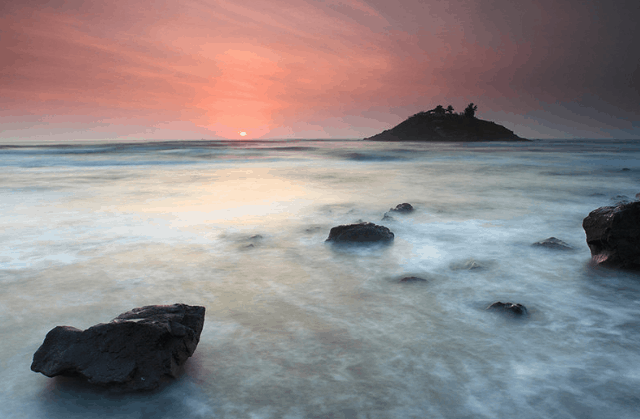Bình minh trên đảo Hòn Bà
Hoàng hôn trên đảo Hòn Ba
Trong tương lại không xa, Sở Văn hóa – Thể thao và Du lịch tỉnh Vũng Tàu sẽ cải thiện thêm Hòn Bà để trở thành điạ điểm du lịch Vũng Tàu cho du khách tham quan, thưởng ngoạn kết hợp du lịch tâm linh.
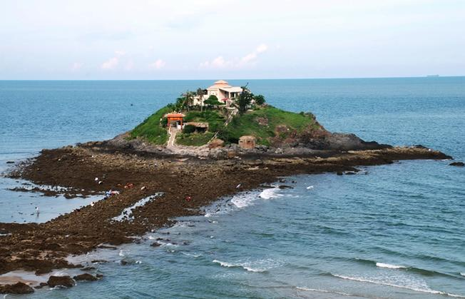Vẻ đẹp của Đảo Hòn Bà giữa biển (Ảnh sưu tầm)
Trải qua thử thách của thời gian, đảo Hòn Bà tại địa điểm du lịch Vũng Tàu vẫn giữ cho mình nét đẹp hoang sơ, thiên nhiên thơ mộng hữu tình. Nếu bạn muốn tìm đến một nơi tâm linh huyến bí kết hợp với thưởng thức thiên nhiên hoang dã thì đảo Hòn bà là điểm đến Vũng Tàu lý tưởng. Đến với Hòn Bà, bạn sẽ cảm thấy tâm hồn được thư giãn, nhẹ nhàng.